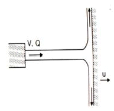
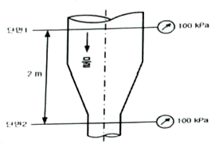
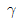
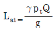
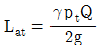
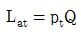
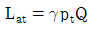
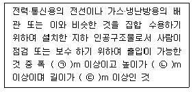
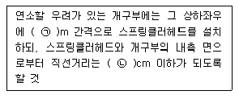
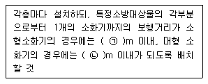

소방설비산업기사(기계) (2016-10-01 기출문제)
1과목: 소방원론
1. 100℃의 액체 물 1g을 100℃의 수증기로 만드는 데 필요한 열량은 약 몇cal/g인가?
- 439
- 539
- 639
- 739
(정답률: 77%)

2. 화재를 발생시키는 열원 중 기계적 원인은?
- 저항열
- 압축열
- 분해열
- 자연발열
(정답률: 84%)
3. 화씨온도 122℉는 섭씨온도는 몇 ℃ 인가?
- 40
- 50
- 60
- 70
(정답률: 77%)
4. 청정소화약제의 물성을 평가하는 항목 중 심장의 역반응(심장 장애현상)이 나타나는 최저 농도를 무엇이라 하는가?
- LOAEL
- NOAEL
- ODP
- GWP
(정답률: 61%)
5. 제연방식의 종류가 아닌 것은?
- 자연제연방식
- 기계제연방식
- 흡입기계방식
- 스모크타워 제연방식
(정답률: 76%)
6. 건축물 내부 화재 시 연기의 평균 수평이동속도는 약 몇 m/s 인가?
- 0.5~1
- 2~3
- 3~5
- 10
(정답률: 69%)
7. 상온, 상압에서 액체 상태인 할로겐화합물 소화약제는?
- 할론 2402
- 할론 1301
- 할론 1211
- 할론 1400
(정답률: 60%)
8. 제4류 위험물 중 제1석유류, 제2석유류, 제3석유류, 제4석유류를 각 품명별로 구분하는 분류의 기준은?
- 발화점
- 인화점
- 비중
- 연소범위
(정답률: 84%)
9. 화재의 분류 중 B급 화재의 종류로 옳은 것은?
- 금속화재
- 일반화재
- 전기화재
- 유류화재
(정답률: 89%)
10. 분진폭발의 발생 위험성이 가장 낮은 물질은?
- 석탄가루
- 밀가루
- 시멘트
- 금속분류
(정답률: 79%)
11. 대기중에 대량의 가연성 가스가 유출하거나 대량의 가연성 액체가 유출하여 그것으로부터 발생하는 증기가 공기와 혼합해서 가연성 혼합기체를 형성하고 발화원에 의하여 발생하는 폭발현상은?
- BLEVE
- SLOP OVER
- UVCE
- FIRE BALL
(정답률: 49%)
12. 이산화탄소 소화약제가 공기중에 34vol.% 공급되면 산소의 농도는 약 몇voL.% 가 되는가?
- 12
- 14
- 16
- 18
(정답률: 64%)
13. 산소와 질소의 혼합물인 공기의 평균 분자량은? (단, 공기는 산소 21vol%, 질소 79vol%로 구성되어 있다고 가정한다.)
- 30.84
- 29.84
- 28.84
- 27.84
(정답률: 74%)
14. 할론 1301 소화약제를 사용하여 소화할 때 연소열에 의하여 생긴 열분해 생성가스가 아닌 것은?
- HF
- HBr
- Br2
- CO2
(정답률: 70%)
15. 인화점에 대한 설명 중 틀린 것은?
- 인화점은 공기 중에서 액체를 가열하는 경우 액체표면에서 증기가 발상하여 점화원에서 착화하는 최저온도를 말한다.
- 인화점 이하의 온도에서는 성냥불을 접근해도 착화하지 않는다.
- 인화점 이상 가열하면 증기를 발생하여 성냥불이 접근하면 착화한다.
- 인화점은 보통 연소점 이상, 발화점 이하의 온도이다.
(정답률: 73%)
16. 니트로셀룰로오스의 용도, 성상 및 위험성과 저장·취급에 대한 설명 중 틀린 것은?
- 질화도가 낮을수록 위험성이 크다.
- 운반 시 물, 알코올을 첨가하여 습윤시킨다.
- 무연화약의 원료로 사용된다.
- 햇빛에서 황갈색으로 변하고 물에 녹지 않지만 아세톤, 초산에스터, 니트로벤젠에 녹는다.
(정답률: 70%)
17. 질식소화 방법과 가장 거리가 먼 것은?
- 건조 모래로 가연물을 덮는 방법
- 불활성 기체를 가연물에 방출하는 방법
- 가연성 기체의 농도를 높게 하는 방법
- 불연성 포소화약제로 가연물을 덮는 방법
(정답률: 77%)
18. 건축법상 건축물의 주요 구조부에 해당되지 않는 것은?
- 지붕틀
- 내력벽
- 주계단
- 최하층 바닥
(정답률: 79%)
19. 청정소화약제의 명명법은 Freon-XYZBA로 표현한다. 이 중 Y가 의미하는 것은?
- 불소 원자의 수
- 수소 원자의 수 - 1
- 탄소 원자의 수 - 1
- 수소 원자의 수 + 1
(정답률: 58%)
20. 멜라민수지, 모, 실크, 요소수지 등과 같이 질소성분을 함유하고 있는 가연물의 연소 시 발생하는 기체로 눈, 코, 인후등에 매우 자극적이고 역한 냄새가 나는 유독성 연소가스는?
- 아크로레인
- 시안화수소
- 일산화질소
- 암모니아
(정답률: 73%)
2과목: 소방유체역학
21. 밀도가 769kg/m3, 동점계수가 0.001m2/s인 액체의 점성계수는 몇 Pa·s인가?
- 1.3
- 13
- 0.0769
- 0.769
(정답률: 55%)
22. 체적이 2m3인 밀폐용기 속에 15℃, 0.8MPa의 공기가 들어 있다. 압력이 1MPa로 상승하였을 때, 온도 변화량은?
- 63K
- 72K
- 87K
- 90K
(정답률: 49%)
23. 그림과 같이 고정된 노즐에서 균일한 유속 V=40m/s, 유량 Q=0.2m3/s로 물이 분출되고 있다. 분류와 같은 방향으로 u=10m/s의 일정 속도로 운동하고 이는 평판에 분사된 물이 수직으로 충돌 할 때 분류가 평판에 미치는 충격력은 몇 kN인가?

- 4.5
- 6
- 44.1
- 58.8
(정답률: 42%)
24. 안지름 25㎝인 원관으로 수평거리1500m 떨어진 곳에 2.36m/s로 물을 보내는 데 필요한 압력은 약 몇 kPa인가? (단, 관마찰계수는 0.035이다.)
- 485
- 585
- 620
- 670
(정답률: 64%)
25. 100mm 관로를 통하여 물을 정확히 10분 동안 탱크에 공급하였다. 탱크의 늘어난 무게가 95.3kN이다. 이 관로를 흐르는 평균유량은 약 몇 m3/s인가? (단, 물의 밀도는 ρ=1000kg/m3이다.)
- 0.0162
- 0.0972
- 0.162
- 0.972
(정답률: 38%)
26. 20℃의 물 10L를 대기압에서 110℃의증기로 만들려면, 공급해야 하는 열량은 약 몇 kJ인가? (단, 대기압에서 물의 비열은 4.2kJ/kg℃, 증발 잠열은2260kJ/kg, 증기의 정압비열은 2.1kJ/kg℃이다.)
- 26380
- 26170
- 22600
- 3780
(정답률: 50%)
27. 다음 그림에서 단면 1의 관지름은 50㎝ 이고 단면 2의 관지름은 30㎝ 이다. 단면 1과2의 압력계의 읽음이 같을 때 관을 통과하는 유량은 몇 m3/s인가? (단, 관로의 모든 손실은 무시한다.)

- 0.442
- 0.671
- 4.74
- 9.71
(정답률: 24%)
28. 원관에서 유체가 완전히 발달된 층류로 흐를 때 속도분포는?
- 전단면에서 일정하다.
- 관벽에서 0이고, 중심까지 직선적으로 증가한다.
- 관 중심에서 0이고, 관벽까지 직선적으로 증가한다.
- 포물선부포로 관벽에서 속도는 0이고, 관 중심에서 속도는 최대가 된다.
(정답률: 46%)
29. 펌프의 공동현상(cavitation) 방지대책으로 가장 적절한 것은?
- 펌프를 수원보다 되도록 높게 설치한다.
- 흡입 속도를 증가시킨다.
- 흡입 압력을 낮게 한다.
- 양쪽 흡입한다.
(정답률: 57%)
30. 유체 속에 완전히 잠김 경사 평면에 작용하는 압력힘의 작용점은?
- 경사 평면의 도심보다 밑에 있다.
- 경사 평면의 도심에 있다.
- 경사 평면의 도심보다 위에 있다.
- 경사 평면의 도심과는 관계가 없다.
(정답률: 70%)
31. 다음 중 무차원인 것은?
- 표면장력
- 탄성계수
- 비열
- 비중
(정답률: 51%)
32. 송풍기의 전압공기동력 Lat를 옳게 나타낸 것은? (단, g는 중력가속도, pt는 송풍기 전압, Q는 체적유량,

는 공기의 비중량을 나타낸다.)



(정답률: 37%)
33. 동일한 사양의 소방펌프를 1대로 운전하다가, 2대로 병렬 연결하여 동시에 운전할 경우에 나타나는 현상으로 옳은 것은? (단, 펌프형식은 원심펌프이고, 배관마찰손실 및 낙차 등은 고려하지 않는다.)
- 동일한 양정에서 유량이 2배로 된다.
- 동일한 유량에서 양정이 항상 2배로 된다.
- 유량과 양정이 모두 2배가 된다.
- 유량과 양정이 변화하지 않는다.
(정답률: 59%)
34. 500℃와20℃의 두 열원 사이에 설치되는 열기관이 가질 수 있는 최대의 이론 열효율은 약 몇 %인가?
- 48
- 58
- 62
- 96
(정답률: 32%)
35. 수면으로부터 15m의 깊이에 있는 잠수부가 물속으로 숨을 내쉬려면 그 압력은 몇 kPa 이상이 되어야 하는가? (단, 대기압은 98kPa이다.)
- 210
- 245
- 270
- 320
(정답률: 52%)
36. 물방울(20℃)의 내부압력이 외부압력보다 1kPa 만큼 더 큰 압력을 유지하도록 하려면 물방울의 지름은 약 몇 mm로 해야 하는가? (단, 20℃에서 물의 표면장력은 0.0727N/m이다.)
- 0.15
- 0.3
- 0.6
- 0.9
(정답률: 38%)
37. 관 상당길이를 구할 때 사용되는 식으로 옳은 것은?
- Hagen-Williama 식
- Torricelli 식
- Darcy-Weisbach 식
- Reynolds 식
(정답률: 56%)
38. 계기압력이 25kPa에서 85kPa로 높아졌을 때 절대압력이 50% 증가했다면 국소 대기압은 몇 kPa 인가?
- 1⑤
- 100
- 95
- 90
(정답률: 43%)
39. 배관 내 유체유량을 직접 측정할 수 있는 기기가 아닌 것은?
- 마노미터
- 벤투리미터
- 로터미터
- 오리피스미터
(정답률: 53%)
40. 두께 10cm인 벽의 내부 표면의 온도는 20℃이고 외부 표면의 온도는 0℃이다. 외부 벽은 온도가 -10℃인 공기에 노출되어 있어 대류 열전달이 일어난다. 외부 표면에서의 대류 열전달계수가 200W/(m2·K)라면 정상상태에서 벽의 열전도율은 몇W/(m2·K)인가? (단, 복사열전달은 무시한다.)(오류 신고가 접수된 문제입니다. 반드시 정답과 해설을 확인하시기 바랍니다.)
- 10
- 20
- 30
- 40
(정답률: 25%)
3과목: 소방관계법규
41. 특정소방대상물 중 지하구에 대한 기준으로 다음 ( )안에 들어갈 내용으로 알맞은 것은?

- ㉠ 1.8, ㉡ 2.0, ㉢ 50
- ㉠ 2.0, ㉡ 2.0, ㉢ 500
- ㉠ 2.5, ㉡ 3.0, ㉢ 600
- ㉠ 3.0, ㉡ 5.0, ㉢ 700
(정답률: 57%)
42. 특수가연물의 저장 및 취급 기준은 무엇으로 정하는가?
- 대통령령
- 총리령
- 시·도의 조례
- 국민안전처장관령
(정답률: 60%)
43. 측정소방대상물에 소방시설을 설치하는 경우 국민안전처장관이 정하는 내진설계 기준에 맞게 설치해야 하는 설비가 아닌 것은?
- 옥내소화설비
- 연결살수설비
- 스프링클러설비
- 물분무등소화설비
(정답률: 60%)
44. 국민안전처장관, 소방본부장 또는 소방서장은 소방특별조사를 하려면 관계인에게 조사대상, 조사기간 및 조사사유 등을 서면으로 며칠 전에 알려야 하는가? (단, 긴급하게 조사할 필요가 있는 경우와 사전에 통지하면 조사목적을 달성할 수 없다고 인정되는 경우는 제외한다.)
- 3
- 7
- 10
- 14
(정답률: 60%)
45. 옥외저장탱크의 주위에 그 저장 또는 취급하는 위험물의 최대수량이 지정수량의 1000배 초과 2000배 이하인 경우 옥외저장탱크의 측면으로부터 몇 m 이상이어야 하는가? (단, 위험물을 이송하기 위한 배관 그 밖에 이에 준하는 공작물은 제외한다.)
- 9
- 7
- 5
- 3
(정답률: 39%)
46. 소방기본법상 소방대상물에 해당되지 않는 것은?
- 건축물
- 항해 중인 선박
- 차량
- 산림
(정답률: 83%)
47. 특수가연물의 품명과 수량기준이 옳게 연결된 것은?
- 면화류 - 200kg 이상
- 대팻밥 - 300kg 이상
- 가연성 고체류 - 1000kg 이상
- 합성수지류(발포시킨 것) - 10m3 이상
(정답률: 70%)
48. 위험물 제조소에 환기설비를 설치할 경우 바닥면적이 100m2이면 급기구의 면적은 몇 cm2이상이어야 하는가?
- 150
- 300
- 450
- 600
(정답률: 57%)
49. 방염성능기준 이상의 실내장식물 등을 설치하여야 하는 특정소방대상물에 해당 되지 않는 것은?
- 근린생활시설 중 체력단련장
- 의료시설 중 종합병원
- 숙박이 가능한 수련시설
- 층수가 16층 이상인 아파트
(정답률: 79%)
50. 소방시설관리업의 등록을 하지않고 영업을 한자에 대한 벌칙기준은?(오류 신고가 접수된 문제입니다. 반드시 정답과 해설을 확인하시기 바랍니다.)
- 300만원 이하의 벌금
- 1년 이하의 징역 또는 1000만원 이하의 벌금
- 3년 이하의 징역 또는 1500만원 이하의 벌금
- 5년 이하의 징역 또는 3000만원 이하의 벌금
(정답률: 56%)
51. 다음에 해당하는 자에 대한 벌칙기준으로 벌금이 가장 큰 경우는?
- 소방안전관리자를 선임하지 아니한 자
- 변경허가를 받지 아니하고 제조소등을 변경한 자
- 위험물의 운반에 관한 중요기준을 따르지 아니한 자
- 방염성능검사에 합격하지 아니한 물품에 합격표시를 위조하거나 변조하여 사용한 자
(정답률: 28%)
52. 제연설비를 설치해야 하는 특정소방대상물의 기준으로 틀린 것은?
- 운동시설로서 무대부의 바닥면적이 200m2이상인 것
- 지하가(터널은 제외한다.)로서 연면적1000m2이상인 것
- 휴게시설로서 지하층의 바닥면적이500m2이상인 것
- 문화 및 집회시설 중 영화상영관으로서 수용인원이 100명 이상인 것
(정답률: 42%)
53. 휴대용 비상조명등을 설치해야 하는 특정소방 대상물이 아니 것은?
- 숙박시설
- 지하가 중 지하상가
- 판매시설 중 대규모점포
- 수용인원 100인 이상의 도서관
(정답률: 54%)
54. 적당한 사유 없이 소방대가 현장에 도착할 때까지 사람을 구출하는 조치 또는 불을 끄거나 불이 번지지 아니하도록 하는 조치를 하지 아니한 사람에 대한 벌칙은?
- 1년 이하의 징역
- 100만원 이하의 벌금
- 500만원 이하의 벌금
- 1000만원 이하의 벌금
(정답률: 67%)
55. 지정수량의 몇 배 이상의 위험물을 취급하는 제조소에는 피뢰침을 설치해야하는가? (단, 제6류 위험물을 취급하는 위험물제조소는 제외한다.)
- 5배
- 10배
- 50배
- 100배
(정답률: 66%)
56. 다음 중 소방활동 종사 면령권을 가진 사람은 누구인가?
- 국민안전처장관
- 소방대장
- 시·도지사
- 관계인
(정답률: 74%)
57. 운송책임자의 감독·지원을 받아 운송해야 하는 위험물은?
- 알카리토금속
- 칼륨
- 유기과산화물
- 알칼리튬
(정답률: 51%)
58. 소방시설 중 소화활동설비에 해당하지 않는 것은?
- 제연설비
- 연소방지설비
- 비상경보설비
- 무선통신보조설비
(정답률: 55%)
59. 소방시설의 하자 발생 통보를 받은 공사업자는 며칠 이내에 하자를 보수하거나 보수 일정을 기록한 하자보수계획을 관계인에게 서면으로 알려야 하는가?
- 1일
- 2일
- 3일
- 7일
(정답률: 62%)
60. 소방본부장이나 소방서장이 소방시설공사 완공검사를 위한 현장확인 대상 특정소방 대상물의 범위에 해당하지 않는 것은?
- 운동시설
- 노유자시설
- 판매시설
- 업무시설
(정답률: 55%)
4과목: 소방기계시설의 구조 및 원리
61. 주방용 자동소화장치의 설치기준 중 가스차단장치는 주방배관의 개폐밸브로부터 최대 몇 m 이하의 위치에 설치해야 하는가?(관련 규정 개정전 문제로 기존 정답은 2번 이었습니다. 여기서는 2번을 누르면 정답처리 됩니다. 자세한 내용을 해설을 참고하세요.)
- 1
- 2
- 3
- 4
(정답률: 80%)
62. 할로겐화합물 소화약제 가압용 가스용기의 충전가스로 옳은 것은?
- NO2
- O2
- N2
- H2
(정답률: 83%)
63. 스프링클러설비 교차배관의 최소구경은 몇 mm 이상이어야 하는가? (단, 패들형 유수검지장치를 사용하는 경우는 제외한다.)
- 13
- 25
- 32
- 40
(정답률: 57%)
64. 하나의 배관에 부착하는 살수헤드의 개수가 7개인 경우 연결살수설비 배관의 최소 구경은 몇 ㎜ 인가? (단, 연결살수설비 전용헤드를 사용하는 경우이다.)
- 32
- 40
- 50
- 80
(정답률: 54%)
65. 공기포 소화약제의 혼합방식 중 펌프와 발포기의 중간에 설치된 벤추리관의 벤추리작용에 따라 포 소화약제를 흡입·혼합하는 방식은?
- 라인 푸로포셔너 방식
- 프레져 푸로포셔너 방식
- 펌프 푸로포셔너 방식
- 프레져사이드 푸로포셔너 방식
(정답률: 61%)
66. 평상시 최고 주위온도가 110℃이며 높이가 3.8m 인 공장에 설치하는 폐쇄형스프링클러헤드의 표시온도로 옳은 것은?
- 79℃ 미만
- 79℃ 이상 121℃ 미만
- 121℃ 이상 162℃ 미만
- 162℃ 이상
(정답률: 46%)
67. 분말소화설비 저장용기의 설치기준으로 옳은 것은?
- 저장용기의 충전비는 0.7이상으로 할 것
- 가압식의 분말소화설비는 사용압력 범위를 표시한 지시압력계를 설치할 것
- 축압식은 용기의 내압시험압력의 1.8배 이하의 압력에서 작동하는 안전벨브를 설치할 것
- 저장용기에는 저장용기의 내부압력이 설정압력으로 되었을 때 주벨브를 개방하는 정압작동장치를 설치할 것
(정답률: 59%)
68. 물분무소화설비의 수원 저수량 기준으로 옳은 것은?
- 특수가연물을 저장하는 또는 취급하는 특정소방대상물 또는 그 부분에 있어서 그 바닥 면적 1m2에 대하여 20L/min로 20분간 방수할 수 있는 양 이상으로 할 것
- 주차장은 그 바닥면적 1m2에 대하여 10L/min로 20분간 방수할 수 있는 양 이상으로 할 것
- 케이블트레이드는 투영된 바닥면적 1m2에 대하여 10L/min로 20분간 방수할 수 있는 양 이상으로 할 것
- 케이블덕트는 투영된 바닥면적 1m2에 대하여 12L/min로 20분간 방수할 수 있는 양 이상으로 할 것
(정답률: 46%)
69. 호스릴 이산화탄소 소화설비의 설치기준으로 틀린 것은?
- 소화약제 저장용기는 호스릴을 설치하는 장소마다 설치할 것
- 노즐은 20℃에서 하나의 노즐마다 40kg/min 이상의 소화약제를 방사할 수 있는 것으로 할 것
- 방호대상물의 각 부분으로부터 하나의 호스 접결구까지 수평거리가 15m 이하가 되도록 할 것
- 소화약제 저장용기의 개방벨브는 호스의 설치장소에서 수동으로 개폐할 수 있는 것으로 할 것
(정답률: 58%)
70. 최대 방수구역의 바닥면적이 60m2인 주차장에 물분무소화설비를 설치하려고 하는 경우 수원의 최소 저수량은 몇 m3 인가?
- 12
- 16
- 20
- 24
(정답률: 53%)
71. 포소화설비의 화재안전기준에 따른 팽창비의 정의로 옳은 것은?
- 최종 발생항 포원액 체적/원래 포원액 체적
- 최종 발생한 포수용액 체적/원래 포원액 체적
- 최종 발생한 포원액 체적/원래 포수용액 체적
- 최종 발생한 포 체적/원래 포수용액 체적
(정답률: 42%)
72. 제3종 분말소화설비 사용되는 소화약제의 주성분으로 옳은 것은?
- 인산염
- 탄산수소칼륨
- 탄산수소나트륨
- 탄산수소칼륨과 요소와의 반응물
(정답률: 84%)
73. 연소할 우려가 있는 개구부의 스프링클러헤드 설치기준 중 다음 ( ) 안에 알맞은 것은?

- ㉠ 1.5 ㉡ 15
- ㉠ 2.5 ㉡ 15
- ㉠ 1.5 ㉡ 20
- ㉠ 30 ㉡ 20
(정답률: 55%)
74. 소화기의 설치기준 중 다음 ( )안에 알맞은 것은? (단, 가연성물질이 없는 작업장 및 지하구의 경우는 제외한다.)

- ㉠ 20 ㉡ 10
- ㉠ 10 ㉡ 20
- ㉠ 20 ㉡ 30
- ㉠ 30 ㉡ 20
(정답률: 72%)
75. 제연설비에서 배출풍도 단면의 직경의 크기가 450mm 이하인 경우 배출풍도 강판두께의 기준으로 옳은 것은?
- 0.5mm 이상
- 0.8mm 이상
- 1.0mm 이상
- 1.2mm 이상
(정답률: 59%)
76. 옥내소화전 방수구와 연결되는 가지배관의 구경은 최소 몇 mm 이상이어야 하는가?
- 40
- 50
- 65
- 100
(정답률: 41%)
77. 완강기의 최대 사용자수는 최대사용하중을 몇 N으로 나누어서 얻는 값으로 해야 하는가?
- 600
- 700
- 1000
- 1500
(정답률: 74%)
78. 연결살수설비의 헤드를 설치하지 아니할 수 있는 장소의 기준으로 틀린 것은?
- 천장·반자중 한쪽이 불연재료로 되어있고 천장과 반자사이의 거리가 1m 미만인 부분
- 현관 또는 로비등으로서 바닥으로부터 높이가 15m 이상인 장소
- 천장과 반자 양쪽이 불연재료 되어 있는 경우로서 천장과 반자사이의 거리가 2m 미만인 부분
- 천장과 반자 양쪽이 불연재료로 되어 있는 경우로서 천장과 반자사이의 벽이 불연 재료이고 천장과 반자사이의 거리가 2m 이상으로서 그 사이에 가연물리 존재하지 아니하는 부분
(정답률: 39%)
79. 지하가 중 지하상가에 설치해야 할 인명구조 기구의 종류로 옳은 것은?
- 공기호흡기
- 구조대
- 방열복
- 인공소생기
(정답률: 63%)
80. 특별피난계단의 계단실 및 부속실 제연설비에 대한 설명으로 틀린 것은?
- 급기구는 급기되는 기류 흐름이 출입문으로 인하여 차단되거나 방해받지 아니하도록 옥내와 면하는 출입문으로부터 가능한 가까운 위치에 설치해야 한다.
- 제연설비가 가동되었을 때, 출입구의 개방에 필요한 힘은 110N 이하로 하여야 한다.
- 보충량은 부속실의 수가 20이하는 1개층 이상, 20을 초과하는 경우에는 2개층 이상의 보충량으로 한다.
- 급기구는 급기용 수직풍도와 직접 면하는 벽체 또는 천장에 고정해야 한다.
(정답률: 41%)
액체 물의 비열은 1cal/g℃이고, 상변화 열은 540cal/g이다. 따라서, 100℃의 액체 물 1g을 수증기로 만드는 데 필요한 열량은 다음과 같다.
1g × (1cal/g℃ × (100℃ - 0℃) + 540cal/g) = 539cal
따라서, 정답은 "539"이다.